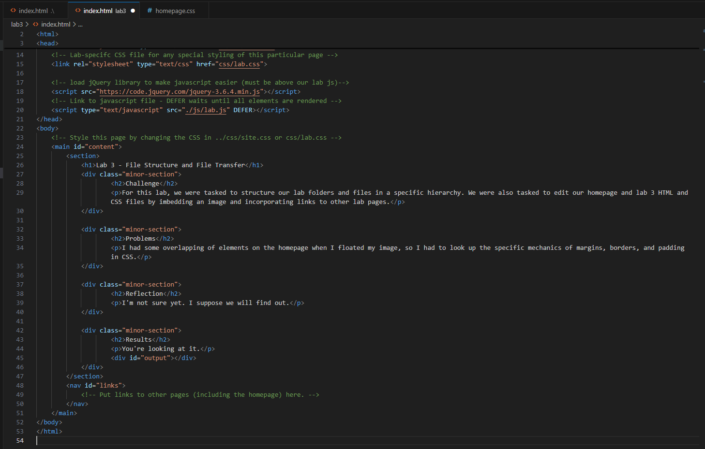

Lab 3 - File Structure and File Transfer
Challenge
For this lab, we were tasked to structure our lab folders and files in a specific hierarchy. We were also tasked to edit our homepage and lab 3 HTML and CSS files by imbedding an image and incorporating links to other lab pages.
Problems
I had some overlapping of elements on the homepage when I floated my image, so I had to look up the specific mechanics of margins, borders, and padding in CSS.
Reflection
Overall, the entire lab assignment went very smoothly. We had a few hiccups here and there due to small syntax errors or typos, but nothing that couldn't be resolved quickly and efficiently.
Results
You're looking at it.
